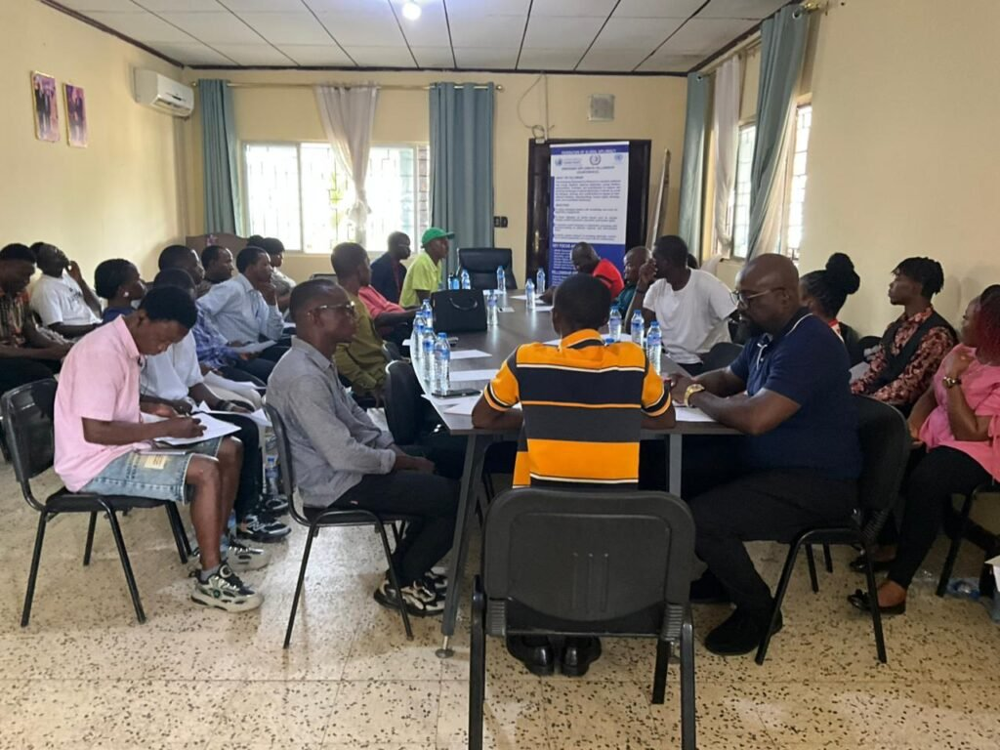

Unity & cooperation
Strengthening ties among African nations, institutions, communities, and the diaspora through coordinated dialogue and action.
Africa Unification Summit 2026
A continental platform advancing African unity, practical cooperation, strategic investment, and shared prosperity.

Who we are
The Africa Unification Summit 2026 brings together heads of state, government representatives, policymakers, diplomats, investors, development partners, civil society, women leaders, young people, innovators, and members of the African diaspora.
Hosted in Liberia, the Summit is designed to move beyond conversation. It creates space for policy alignment, investment matchmaking, knowledge exchange, and partnerships that support sustainable development across the continent.
To advance African unity, strengthen cooperation, and connect ideas, leadership, and investment with practical opportunities for continental progress.
What drives the Summit
Strengthening ties among African nations, institutions, communities, and the diaspora through coordinated dialogue and action.
Connecting credible projects with investors and partners through B2B and B2G meetings, matchmaking, and strategic agreements.
Elevating the leadership, ideas, skills, and enterprise of Africa’s women, young people, entrepreneurs, and innovators.
Summit experience
Each part of the Summit connects high-level dialogue with sector expertise, investment opportunities, and relationship building.
Welcome by the host nation, keynote addresses, and the official opening declaration.
Continental priorities, policy alignment, regional cooperation, and shared strategies.
Expert-led discussions focused on Africa’s most important growth and development sectors.
Bankable project presentations, B2B and B2G meetings, and partnership agreements.
Startup pitches, innovation exhibitions, leadership dialogue, and digital enterprise.
Leadership, access to finance and markets, mentorship, and gender-inclusive policy.
Diplomatic receptions, African arts, fashion, heritage, tourism, and diaspora exchange.
A showcase for institutions, companies, destinations, startups, and sector innovations.
Continental priorities
Why it matters
The Summit is structured to help participants develop relationships and opportunities that can continue long after the closing ceremony.
Collaboration
Working with the Federation of Global Diplomacy, our partners contribute expertise, networks, and resources that strengthen the Summit’s international platform.
Be part of the Summit
Join leaders, investors, innovators, institutions, and communities in Monrovia for five days of purposeful engagement.